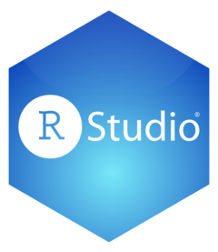

install.packages(c("tidyverse", "usethis"))RStudio: Ambiente de Desenvolvimento Integrado para a Linguagem R
Ambiente de Desenvolvimento Integrado
Reprodutibilidade
RStudio
Sistema Quarto
Um tutorial básico sobre o RStudio, um ambiente de desenvolvimento integrado simples e eficiente para a linguagem R.

1 Introdução
RStudio IDE x Linguagem R

R é uma linguagem de programação, enquanto o RStudio é um Ambiente de Desenvolvimento Integrado que contém recursos que facilitam o uso da linguagem R.
Utilizando a analogia de um carro, R seria o motor enquanto o RStudio seria o painel de controles (dashboard)
Portanto, é necessário ter os dois softwares instalados.
2 RStudio: Uma Visão Geral
2.1 Interface do RStudio

2.2 Painel: Source
O painel
Sourcepermite que a visualização e edição de vários arquivos relacionados a diversas linguagens, tais como:.R,.qmd,.rmd.py, ou arquivos de texto gerais como.txtou.md.Por padrão, é o painel superior esquerdo e pode ser iniciado abrindo qualquer arquivo editável no RStudio.
Cada arquivo adicional que for aberto será adicionado como uma nova guia no painel.
2.3 Painel: Console
Esse painel fornece uma área para executar o código interativamente, isto é, você pode “conversar” diretamente com o interpretado da linguagem R.
Por padrão, está vinculado a linguagem R, mas ele também pode fornecer um console Python.
2.4 Painel: Environment
Guia Environment
Essa guia exibe objetos R e Python ativos na sessão atual.
A barra de menus de
Environmentfornece carregamento ou salvamento de R workspaces, importação interativa de conjuntos de dados de arquivos de texto, Excel ou SPSS/SAS/Stata.Ela também exibe a memória usada pela sessão R ativa e um ícone de uma vassoura para remover todos os objetos ativos.
2.5 Painel: Output
Por padrão, o painel Output é o painel inferior direito e contém as seguintes guias:
Guia Files
Esta guia fornece uma exploração interativa da pasta de arquivos da pasta para a qual R está direcionado, chamada working directory (pasta de trabalho)
Nesta guia, você pode adicionar, excluir, renomear e remover arquivos e pastas, entre outras operações.
Guia Help
O ícone
Homeexibe a página de ajuda geral, com links para Manuais e Referências sobre o R e RStudio.Exibe também a documentação dos pacotes.
Guia Viewer
- Exibe usada conteúdos interativos tais como: gráficos interativos, aplicativos Shiny, páginas html geradas pelo Quarto, entre outros.
Guia Presentation
- Esta guia é usada para exibir slides HTML gerados pelo sistema Quarto.
Guia Plots
Esta guia exibe imagens estáticas produzidas na sessão.
Há setas para navegar entre gráficos mais antigos e mais recentes, zoom, um botão de exportação para salvar as imagens, um botão de exclusão imagem e um ícone de vassoura que limpará todos os gráficos.
Guia Packages
Esta guia permite visualizar os pacotes R instalados.
Há uma barra para pesquisar a biblioteca atual de pacotes.
Há também um botão para instalação e atualização de pacotes.
2.6 Instalando Pacotes R:
2.6.1 Usando a Guia Packages
Para instalar pacotes usando a guia Packages no RStudio:
Clique na guia Packages.
Clique em Install Packages.
Digite o nome de cada pacote que deseja instalar separados por um espaço ou vírgula na caixa de texto.
Copie os pacotes abaixo e cole na caixa de texto:
tidyverse usethis - Clique em Install para iniciar a instalação
2.6.2 Usando comandos
Uma forma alternativa de instalar pacotes é usando a linha de comando.
Você pode usar o seguinte comando diretamente no console, em um script, ou em um documento Quarto:
2.7 Pacotes: Atenção!
Instalação e Carregamento de Pacotes.
Usando um IDE como o RStudio, ou outro, em um computador, precisamos instalar pacotes apenas uma vez.
Entretanto, para utilizar os pacotes já instalados, precisamos sempre carregá-los com:
# carrega os pacotes utilizados
library(tidyverse)
library(usethis)
.
.
Conexão com a Internet.
Para instalar pacotes, de R ou Python, é necessária uma conexão ativa com a internet.
Pode ser necessário repetir a instalação devido à falhas na conexão, que faz com que os arquivos dos pacotes não sejam baixados completamente.
2.8 Configurações Básicas Recomendadas do RStudio
Abra o RStudio
Clique no menu “Tools” > “Global Options” > “Basic”
Desmarque a opção: “Restore most recently opened project at startup”
Desmarque a opção: “Restore previously open source document at startup”
Desmarque a opção: “Restore .Rdata into workspace at startup”
Na caixa à direita de “Save workspace to .Rdata on exit:”, selecione “never”
Clique em “Ok” e, em seguida, em “Apply”
3 Projetos RStudio
3.1 Criando Projects no RStudio
Os Projetos RStudio estão associados a pastas.
Os Projetos RStudio podem ser criados:
Em um nova pasta, que não existe.
Em uma pasta existente, por exemplo, uma pasta que contém um repositório clonado do GitHub.
O caminho mais curto para criar um projeto no RStudio envolve:
- Clique no botão
Project, em seguida, clique emNew Project, no canto superior direito do RStudio:

- Em seguida, clique em
New Directory:

- Na janela seguinte selecione
New Project:

- Escolha a pasta dentro da qual você criará a subpasta seunome_icd2025 (que será a pasta do projeto), clicando no botão Browse.
Importante! Nome da Pasta e do Projeto
No caso de um aluno hipotético chamado João Silva, o nome da subpasta seria joaosilva_icd2025, tente seguir esse padrão e não utilize acentos, espaços e caracteres especiais para nomear pastas, projetos e arquivos.
- Digite o nome do projeto (por exemplo,
joaosilva_icd2025) no campo de texto abaixo de Directory Name e clique na caixa Create a git repository:
- Clique em Create Project para criar o projeto. Em seguida, você verá algo similar a seguinte imagem no RStudio:
3.2 Projeto Criado
Quando um novo projeto é criado, o RStudio:
Cria um arquivo de projeto (
joaosilva_icd2025.Rproj) dentro da pasta do projeto.Carrega o projeto no RStudio e exibe seu nome no menu Projects.
Com um projeto criado, toda vez que abrir o RStudio, basta clicar em Project, logo abaixo irá aparecer o nome do projeto, clique no nome para abrir o projeto.
3.3 Estrutura Recomendada para o Projeto RStudio Criado
Para organizar adequadamente os arquivos de seus projetos envolvendo a análise de dados, recomendamos que você adote a seguinte estrutura inicial de pastas para seu projeto:
- Primeiramente, vamos criar duas pastas principais:
- dados: Para armazenar todos os conjuntos de dados do projeto.
- relatorios: Para armazenar todos os documentos Quarto e relatórios.
- Dentro da pasta dados, vamos criar duas subpastas:
- dados_brutos: Para armazenar os dados originais, sem modificações.
- dados_limpos: Para armazenar dados após limpeza e transformações.
- Dentro da pasta relatorios, vamos criar a subpasta:
- testes: Para armazenar documentos Quarto de teste e experimentos.
Esta estrutura fornece uma organização clara que separa dados de documentos e também distingue entre dados brutos e processados (ou limpos, no jargão de Ciência de Dados), seguindo boas práticas de reprodutibilidade.
Para criar esta estrutura usando o RStudio:
- Na Guia
Filesdo RStudio, clique no botãoNew Folderpara criar as pastas principaisdadoserelatorios:

Navegue para dentro da pasta
dadose crie as subpastasdados_brutosedados_limpos.Navegue para dentro da pasta
relatoriose crie a subpastatestes.
Considerando o caso do aluno hipotético chamado João Silva, a estrutura final do projeo ficaria assim:
joaosilva_icd2025/
│
├── dados/
│ ├── dados_brutos
│ └── dados_limpos
|
├── joaosilva_icd2025.Rproj
|
└── relatorios/
└── testes3.4 Gerenciamento de Arquivos
O RStudio suporta realce de sintaxe e outros recursos especializados de edição de código para tipos de arquivos específicos:
Scripts R, Python, SQL e outros.
Documentos computacionais e científicos em Quarto, R Markdown e LaTeX.
Conteúdo da Web, como HTML, CSS
E muitos mais.
3.4.1 Menu Files
- É possível criar um novo arquivo com
File -> New File:

- Outra possibilidade é usar o ícone no canto superior esquerdo do RStudio:
3.5 Configurando o RStudio para usar o Git Bash como Terminal
4 Atalhos de Teclado Essenciais
Dominar alguns atalhos de teclado básicos aumentará significativamente sua produtividade no RStudio, especialmente ao trabalhar com documentos Quarto:
Windows/Linux | macOS | Função
Navegação entre painéis:
Ctrl+1|⌘+1| Move o cursor para o painel SourceCtrl+2|⌘+2| Move o cursor para o ConsoleCtrl+3|⌘+3| Move o cursor para o painel EnvironmentCtrl+4|⌘+4| Move o cursor para o painel OutputCtrl+Shift+0|⌘+Shift+0| Restaura o layout padrão dos painéisCtrl+.|⌘+.| Navegação rápida para seções/funções/chunks
Trabalho com documentos Quarto:
Ctrl+Shift+K|⌘+Shift+K| Renderiza o documento Quarto ativoCtrl+Alt+I|⌘+Option+I| Insere uma nova célula de códigoCtrl+Enter|⌘+Enter| Executa a célula de código atual ou a linha selecionadaCtrl+Shift+Enter|⌘+Shift+Enter| Executa a célula de código atual completoCtrl+Alt+C|⌘+Option+C| Executa todas as células anterioresCtrl+Alt+R|⌘+Option+R| Executa todas as células no arquivoCtrl+Alt+P|⌘+Option+P| Abre o painel para navegar pelo arquivo
Edição:
Ctrl+Shift+M|⌘+Shift+M| Insere o operador pipe do tidyverse (%>%)Alt+-|Option+-| Insere o operador de atribuição (<-)Ctrl+Shift+.|⌘+Shift+.| Insere o operador pipe nativo do R (|>)Tab: Autocompleta comandos ou nomes de variáveisCtrl+Shift+C|⌘+Shift+C| Comenta/descomenta a linha atual ou seleçãoF1: Mostra ajuda para função sob o cursorAlt+Shift+K|Option+Shift+K| Abre uma janela com todos os atalhos disponíveis
Console:
Ctrl+L|⌘+L| Limpa o ConsoleEsc: Interrompe a execução de código no RSetas ↑/↓: Navega pelo histórico de comandos no Console
5 Glossário de Termos
A
Ambiente de Desenvolvimento Integrado (IDE): Software que combina editor de código ou texto, console, gerenciamento de arquivos e outras ferramentas para facilitar o desenvolvimento de softwares.
C
Console: Interface de linha de comando onde os códigos R são executados interativamente e os resultados são mostrados imediatamente.
E
Editor de texto/código: Componente do IDE onde você escreve e edita o código antes de executá-lo.
P
Pacote: Coleção de funções, dados e documentação que estende as funcionalidades da linguagem R.
Painel (Pane): Áreas da interface do RStudio que contêm diferentes ferramentas, como editor, console, ambiente, etc.
Projeto RStudio: Sistema que organiza arquivos relacionados a uma análise específica em uma estrutura coerente, facilitando a organização e reprodutibilidade.
Q
Quarto: Sistema de publicação científica e técnica que permite combinar código, texto narrativo, equações e visualizações em um único documento. Sucessor do R Markdown.
R
R: Linguagem de programação especializada em análise estatística e visualização de dados.
Reprodutibilidade: Princípio que permite que outros pesquisadores e profissionais possam replicar exatamente os mesmos resultados utilizando os mesmos dados e códigos. No contexto corporativo, garante a auditabilidade de análises, facilita a transferência de conhecimento entre equipes, permite verificação de resultados por diferentes stakeholders e assegura a continuidade de projetos mesmo com mudanças de pessoal.